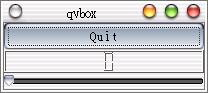
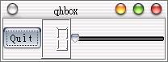

QVBox與QHBox的版面配置方式是類別的，差別在於一個是垂直由上而下加入Widget，一個是水平由左而右加入Widget，其配置方式就像堆箱子一樣，所以有Box的名稱。
下面這個程式是繼承QVBox來配置Widget的例子：
#include <qapplication.h>
#include <qpushbutton.h>
#include <qslider.h>
#include <qlcdnumber.h>
#include <qvbox.h>
class MyWidget : public QVBox {
public:
MyWidget(QWidget *parent=0, const char *name=0);
};
MyWidget::MyWidget(QWidget *parent, const char *name)
: QVBox(parent, name) {
QPushButton *quit = new QPushButton("Quit", this, "quit");
QLCDNumber *lcd = new QLCDNumber(2, this, "lcd");
QSlider * slider = new QSlider(Horizontal, this, "slider");
slider->setRange(0, 99);
slider->setValue(0);
}
int main(int argc, char **argv)
{
QApplication app(argc, argv);
MyWidget wm;
app.setMainWidget(&wm);
wm.show();
return app.exec();
}
配置方法基本上與上一個範例QGrid的配置是相同的，我們就不多作說明，請自行參考上一個範例說明，這個程式的執行結果如下所示：

接下來是QHBox的配置示範，這次我們採取直接宣告物件進行配置的方式：
#include <qapplication.h>
#include <qpushbutton.h>
#include <qslider.h>
#include <qlcdnumber.h>
#include <qhbox.h>
int main(int argc, char **argv) {
QApplication app(argc, argv);
QHBox box;
box.resize(200, 50);
QPushButton quit("Quit", &box);
QLCDNumber lcd(2, &box);
QSlider slider(Qt::Horizontal, &box);
slider.setRange(0, 99);
slider.setValue(0);
app.setMainWidget(&box);
box.show();
return app.exec();
}
下圖是程式執行的結果：

|
|